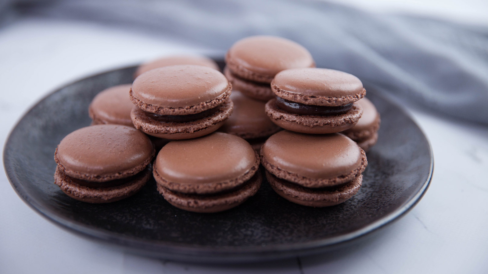

French Meringue Almond Macarons

Delicious Chocolate almond macarons
A macaron is a popular French cookie with a delicate texture and is made by combining meringue with a mixture of almond powder, confectioners' sugar, and food coloring. A flavoured ganache, buttercream or jam is used to sandwich the cookies together, while the color and decoration of the shell are used to distinguish each flavour.
Ingredients
- 170 g Almond powder
- 335 g Confectioners' sugar
- 150 g Egg whites, aged
- 0.5 g Cream of tartar or 5 drops of lemon juice
- 75 g Granulated sugar
- 1 g Fine sea salt or fine table salt
- Food Coloring
- Dark chocolate ganache filling
Steps:
- Blend together the almond powder and the confectioners' sugar
- Spread the mixture on a baking tray lined with parchment paper and allow it to dry uncovered in a cool, well ventilated and dry place for 24 - 48 hrs
- Combine the egg whites, powdered color, cream of tartar, 1/3 of the sugar and the salt in a stand mixer bowl and whisk on medium speed until soft
- Add the remaining sugar and gradually increase to high speed. Whip until the egg whites become a stiff meringue
- Fold in the dry mixture into the meringue in 3 additions
- Continue mixing the batter until it becomes glossy and slightly runny. This is called “macaronner”. Do not overmix, otherwise, the batter will become watery and make it diffcult to pipe
- Transfer the batter to a pastry bag fitted with a pastry tip using a spatula
- Place the template under a Silpat mat. Pipe a dome on each template circle and swiftly cut away with the pastry tip. This will leave a small “tail”
- Preheat the oven to 300oF (150oC)
- Bake the macarons for about 10 min. Slightly open the oven door for a full 2 sec to allow the steam to escape. Close the door and continue to bake for 2 min. Remove from the oven and let cool on the baking tray. Do not remove them when they are warm or they will stick or tear
- Fill macarons. Place the top half of the macaron shell onto the filling and sandwich them together pressing and turning at the same time until the filling comes all the way to the edge. The macarons will need to be covered with plastic wrap and placed in the refrigerator for 24 to 48 hours or until the texture of the shell is moist. This is called maturing. Once they have matured, the macarons are ready to be enjoyed.